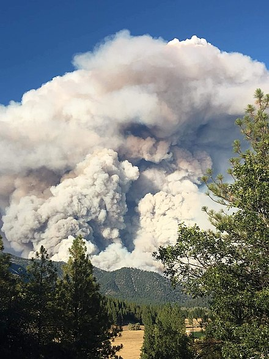
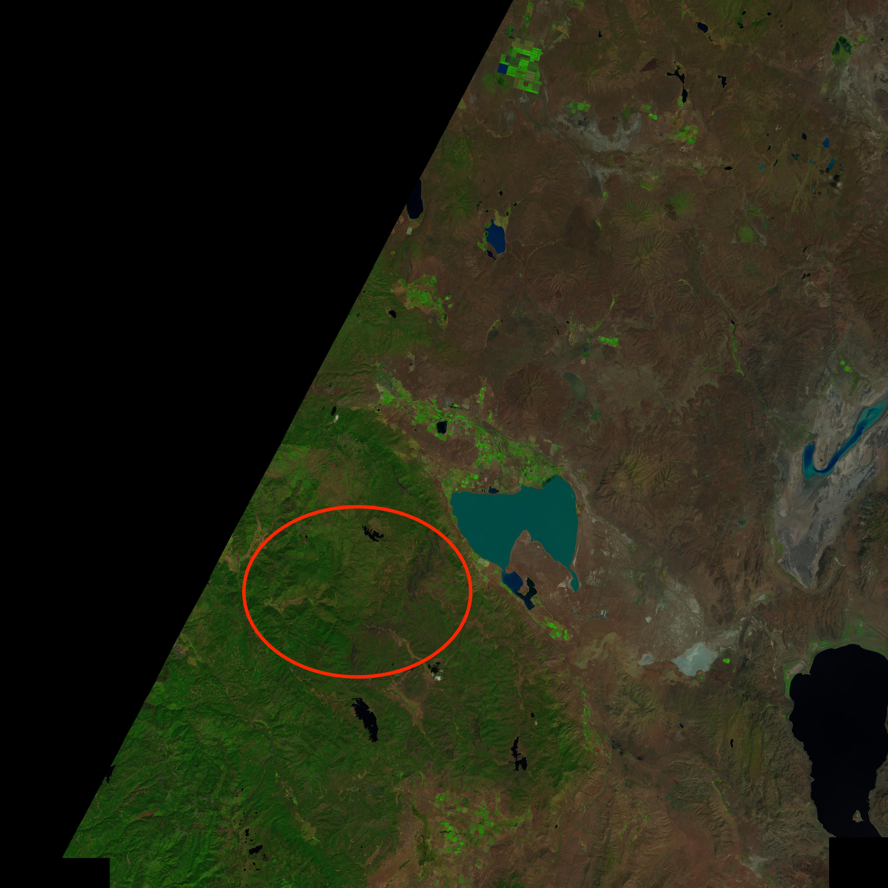
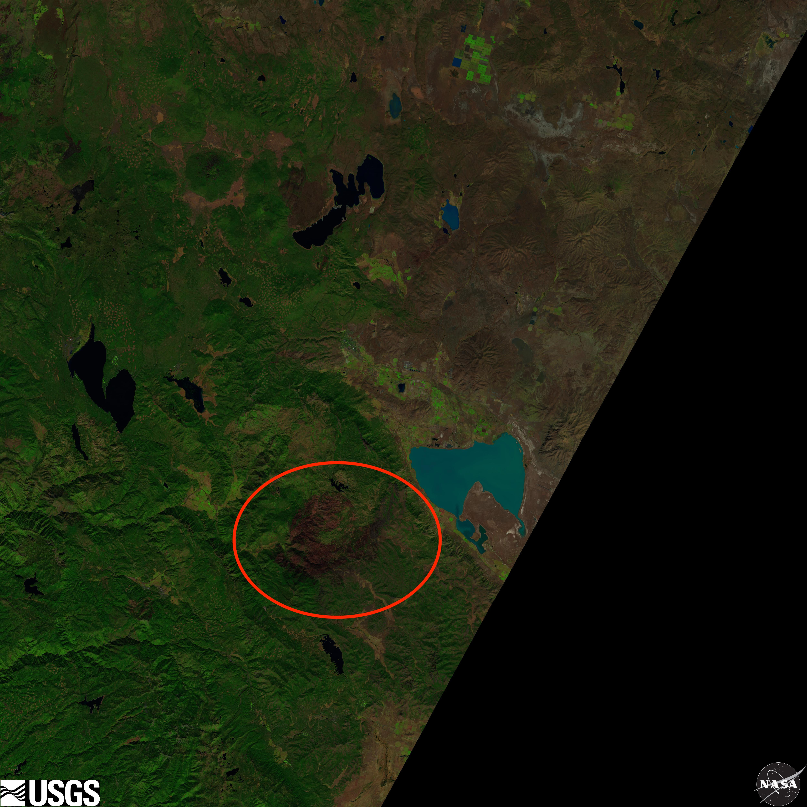

Wildfires in California have burned more frequently and across greater areas for the last few years. The Walker fire is one of the more severe incidents, and was first reported on September 4th, 2019. It was 100% contained by September 25th, 2019. In this time, it burned around 54,600 acres.

The fire was first reported in Plumas National Forest in the early afternoon of September 4th. At this point, it was estimated to cover between 3 and 5 acres. Erratic winds and dry conditions helped it spread to 750 acres by that night. Even with an active response, strong erratic winds and dry conditions grew the fire to cover more than 47,000 acres by September 10th. The fire was 97% contained by September 14th and 100% contained on September 25th. Several structures were destroyed and multiple mandatory evacuation orders issued. Areas of the Plumas National Forest and particular roads remain closed due to the Walker Fire.
Our model managed to accurately predict the disappearance of biomass in the area cooresponding to the burned area in the Genesee Valley.


The federal government and California's state government support the firefighters, but note that "the danger is not over after the flames are put out". They have responded by investigating damaged structures prone to collapse, road damage, and power line dangers. Large organizations like The Red Cross have provided "relief supplies like overnight shelters and recovery support to those impacted" by the recent wildfires.
While fires occur naturally, the recent string of fires in California have spread more aggressively due to the dry conditions. These dry conditions are partially create by anthropogenic climate disruptions.
Future wildfire likelihood can be reduced by firstly handling flammable objects with care while outdoors. improperly handled cigarettes are a common cause of wildfires. Longer term outlook is improved by following sustainable logging practices and any effort to curb the effects of anthropogenic climate change. To learn more, visit The Center for Climate and Energy Soltuions
Charity Navigator ranks The Redwood Empire Food Bank, California Community Foundation, and Habitat for Humanity of Greater Los Angeles as some of the best charities for address California wildfires. Please consider donating.